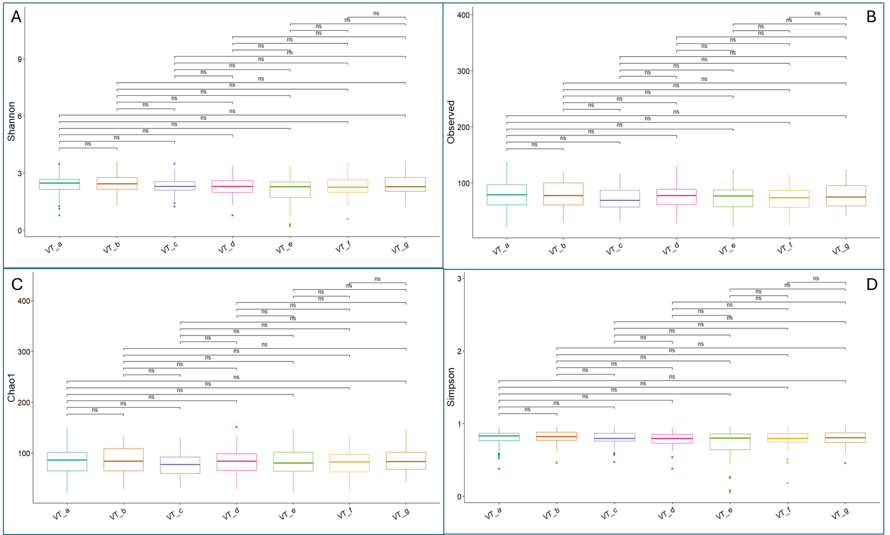

IBDC CBC 2.0 – 2025 Poster
Impact of Panchakarma (Virechana) Therapy on Gut Microbiome in RA
Name: Shreya Johnson
Abstract ID: CBC-AB-5569
Institution: Gujarat Biotechnology Research Centre, Gandhinagar, Gujarat
1. Beta Diversity ▼

{kind=link}
2. Alpha Diversity ▼
No significant differences were observed across stages.
{kind=link}
3. Longitudinal Line Plot ▼
Temporal progression of key microbial genera from Baseline (VT_a) → Virechana → Post-treatment (VT_g).
{kind=link}
4. Differential Abundance ▼
Significantly altered genera across stages.

5. Heatmap of Top 15 Taxa ▼
{kind=link}
6. References ▼
1. Wallace R. K. (2020). The Microbiome in Health and Disease from the Perspective of Modern Medicine and Ayurveda. Medicina (Kaunas, Lithuania), 56(9), 462. https://doi.org/10.3390/medicina56090462
2. Sun, Y., Chen, Q., Lin, P., Xu, R., He, D., Ji, W., Bian, Y., Shen, Y., Li, Q., Liu, C., Dong, K., Tang, Y. W., Pei, Z., Yang, L., Lu, H., Guo, X., & Xiao, L. (2019). Characteristics of Gut Microbiota in Patients With Rheumatoid Arthritis in Shanghai, China. Frontiers in cellular and infection microbiology, 9, 369. https://doi.org/10.3389/fcimb.2019.00369
3. Zhou, B., Dong, C., Zhao, B., Lin, K., Tian, Y., Zhang, R., Zhu, L., Xu, H., & Yang, L. (2022). Bacteroides fragilis participates in the therapeutic effect of methotrexate on arthritis through metabolite regulation. Frontiers in microbiology, 13, 1015130. https://doi.org/10.3389/fmicb.2022.1015130
4.
Acknowledgements
- Dr. Jayesh M. Parmar, Director, AYUSH
- Vd. Falgun Patel, Department Director, AYUSH
- Vd. Sweety Ruparel, Principal, SMIAS
- Vd. Harshit Shah, Principal, GAAC
- Vd. Bharat Kalasariya, Principal, Government Ayurvedic College and Hospital, Vadodara
- Vd. Mayur Masharu, Class-I, Sarajba Government Ayurveda Hospital, Khambholaj
- The staff of Gujarat Biotechnology Research Centre (GBRC)